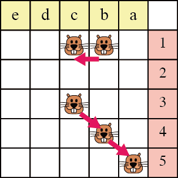
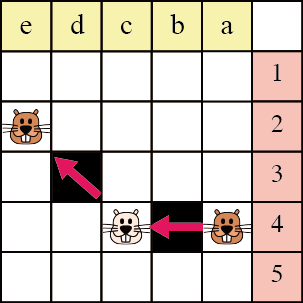
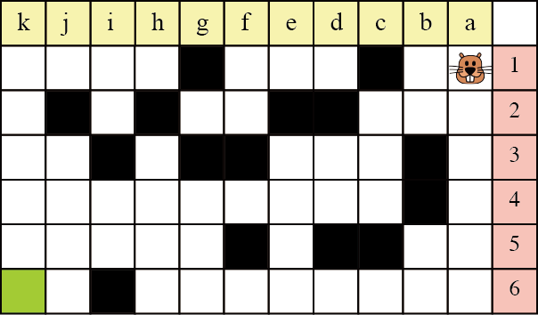

白と黒のマス目があります。ビーバーは白のマス目の上を縦横と斜めに歩けます。このような移動を1回と数えます。下の図は，この説明です．b1 から c1 へ１回で移動でき，c3 から a5 へは２回で移動できます。

ビーバーは黒のマス目を飛び越えることもできます。黒のマス目の反対側には白いマス目が必要です。ビーバーが歩かないでジャンプだけを繰り返した場合，このような移動も1回と数えます。下の図は，この説明です。a4 から e2 へは c4 を経由して1回で移動できます。この例では，1回の移動で2回ジャンプを繰り返していますが，1回の移動で3回以上ジャンプを繰り返すこともできます。

ビーバーが右上の角から左下の角に移動したいと考えています。

いちばん少ない回数で移動したい場合，ビーバーは何回で移動できるでしょうか？